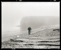

Tianmou2007-08-08 00:494.39 分
性价比 4.00色彩还原 4.00分辨率 4.50锐利度 4.50颗粒度 4.50反差 4.00色饱和度 4.00宽容度 5.00倒易率允许 5.00

黄土岭2005-08-24 14:584.61 分
性价比 1.50色彩还原 5.00分辨率 5.00锐利度 5.00颗粒度 5.00反差 5.00色饱和度 5.00宽容度 5.00倒易率允许 5.00
gs645s2005-04-08 18:184 分
性价比 3.00色彩还原 3.50分辨率 2.00锐利度 4.50颗粒度 5.00反差 5.00色饱和度 5.00宽容度 4.50倒易率允许 3.50